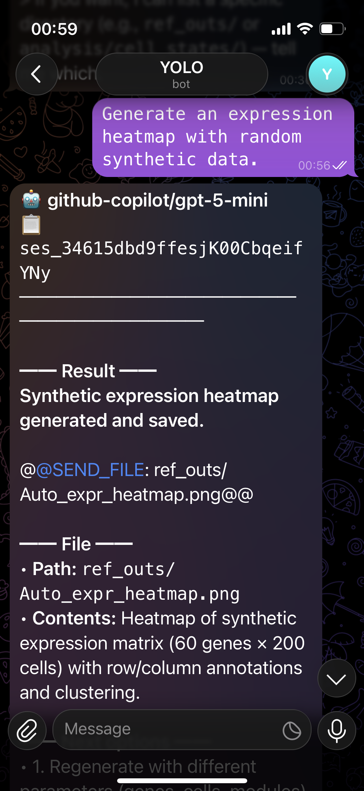
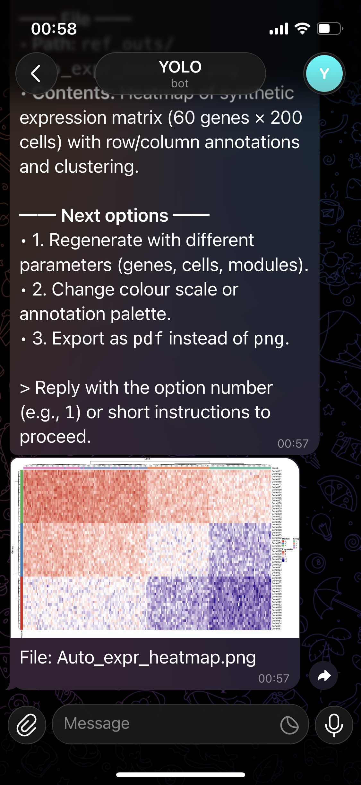
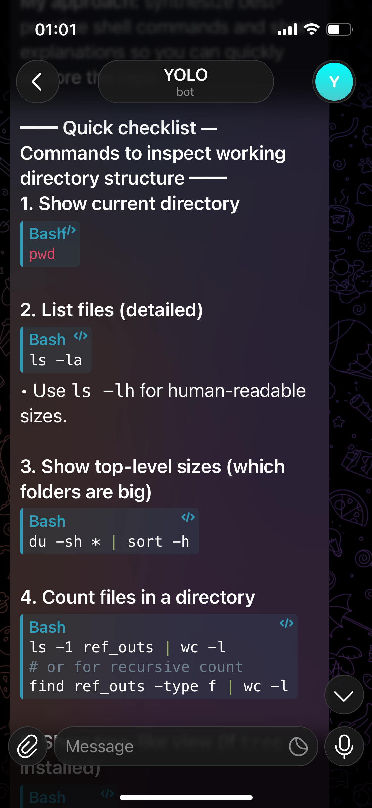
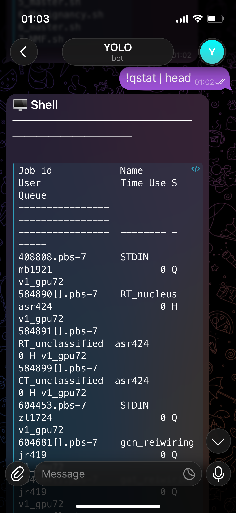
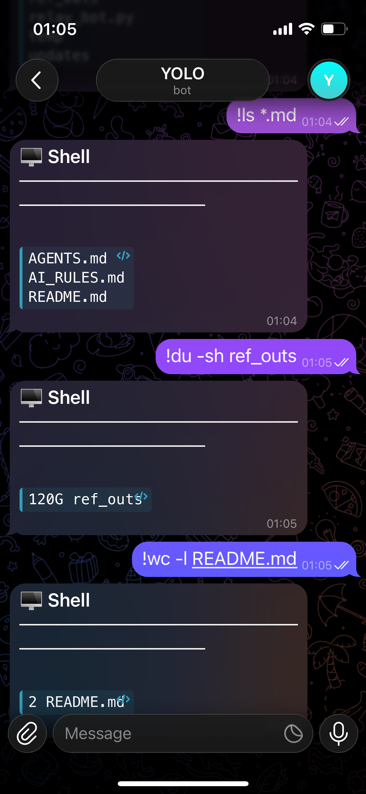

Control AI coding agents on HPC clusters, WSL setups, or lab macOS machines via Telegram -- no VPN, no terminal, just your phone. Let AI help build your scripts, lauch jobs, debug and check results, simply send a message. Built for researchers and bioinformaticians.





A full video/GIF demo will be added here soon.
One authenticated SSH tunnel. Infinite commands.
No screen-scraping. No fragile hacks. A clean, deterministic pipeline.
The relay runs on an already-authenticated machine. Your phone sends Telegram messages -- no Zscaler, no battery drain, no dropped cellular connections.
Network BypassSession IDs are parsed and re-injected. The AI has full conversation memory from cold start -- no daemons, no tmux processes idling on login nodes.
sessionID MemoryDownload files from the target machine to Telegram with /send . Upload from phone
with /upload .
Supports wildcards for batch transfer.
Works with OpenCode, Claude Code, Aider, or any CLI AI tool with a --format json flag. Same relay,
different agent.
Generate an interactive HTML page from all your AI conversations. Browse sessions, search messages, view tool calls, track token usage.
tools/chat_viewer.pyEverything you can do from Telegram. Supports per-chat workspace/session isolation via env config.
30+ model aliases. Switch from Telegram with a single command.
From zero to controlling your workstation from Telegram.
Set CONNECTION_MODE in .env (to ssh, wsl, or
local). If using SSH, add ControlMaster config to ~/.ssh/config on your relay
machine. Authenticate once with MFA -- the socket persists automatically.
Host hpc
ControlMaster auto
ControlPath ~/.ssh/sockets/%r@%h:%p
ControlPersist 8h
Message @BotFather for your bot token. Get your Chat ID from @userinfobot.
Token from @BotFather
Chat ID from @userinfobot
Clone the repo, copy .env.example to .env, fill in your values — that's all the config you need.
git clone https://github.com/MichaelG0501/hpc-relay.git
cd hpc-relay
# Create a separate Python environment (recommended)
# python3 -m venv hpcrelay && source hpcrelay/bin/activate
pip install -r requirements.txt
cp .env.example .env
# Edit .env with your values
python relay_bot.py
Open Telegram, message your bot. The AI executes on your workstation and streams the response back -- formatted, chunked, readable.
debug my RNA-seq pipeline in ~/analysis/pipeline.R
Stay compliant with your cluster's acceptable use policy.
sbatch
squeue!sbatch ~/jobs/run_nf.sh!squeue -u $USER
/send ~/results/output.pdf
Couple the relay with rclone to sync pipeline outputs -- plots, PDFs, slides -- to Google Drive. Open them on your phone seconds after the HPC finishes.
Generate an interactive HTML visualization of all your AI conversations. Browse sessions, search messages, inspect tool calls, and track token usage -- all in a dark-themed, responsive interface.
Clone the repo, edit your config, and send your first command from Telegram.